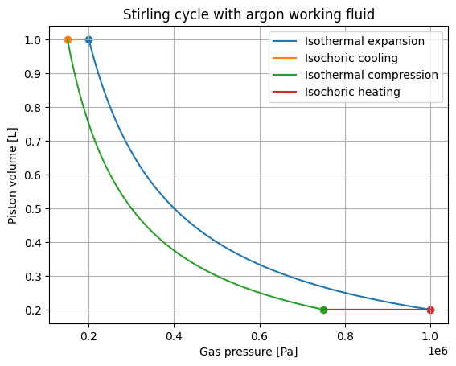

As a part of the course FYS155 which i took at nmbu autumn 2023, we were asked to design an experiment and present the result. After learning to use the TermoPy library which i was developing at the time, i noticed that the choice of working gas had a noticable effect on the efficency of the heat pump. I decided to investigate this further and designed an experiment to measure the efficency of argon heat pumps, as theoretically it should have a difference in efficency of around 1% from that of normal air. The choice of argon was due to availability in the lab
The efficency of a heat pump or a heat engine can be found by deviding the input energy by the work output by the system. For efficient heat engines you therefore want to choose a working gas with the lowest possible heat capacity, meaning you dont have to spend as much energy to heat it up. The heat capacity of argon is lower than that of air, and therefore the efficency should be higher. The difference is however rather low, with air having a theoretical efficency of 0.18 and argon 0.20 according to the Stirling cycle theory. calculation can be found here
Since the theoretical difference in efficency is rather low, and due to unforseen errors, we used had to use statistical methods to design our experiment and obtain valuable information. Our null hypothesis was that the efficency of argon heat pumps is the same as that of air heat pumps, and our alternative hypothesis was that the efficency of argon heat pumps is different from that of air heat pumps. We decided to use a two-tailed t-test to test our hypothesis, and we calculated that we would need a p-value of 0.05 to be sure of the results. We used a sample size of 10, and performed the experiment in a controlled environment to minimize errors. The experiment was performed by heating up the gas in a closed container, and measuring the temperature change over time. The efficency was then calculated using the formula mentioned above. The results can be found below.
After performing the experiment, we observed a statistical difference in efficency between the argon and air heat pumps. The p-value was calculated to be 0.012, which is below the threshold of 0.05. This means that we can reject the null hypothesis and conclude that the efficency of argon heat pumps is different from that of air heat pumps. Additionally the sign of the difference, being larger than 0 which is higher than zero confirms our hypothesis that argon heat pumps are more efficient than air heat pumps. The results are consistent with the theoretical predictions, and we can therefore conclude that the choice of working gas has a significant impact on the efficiency of heat pumps.